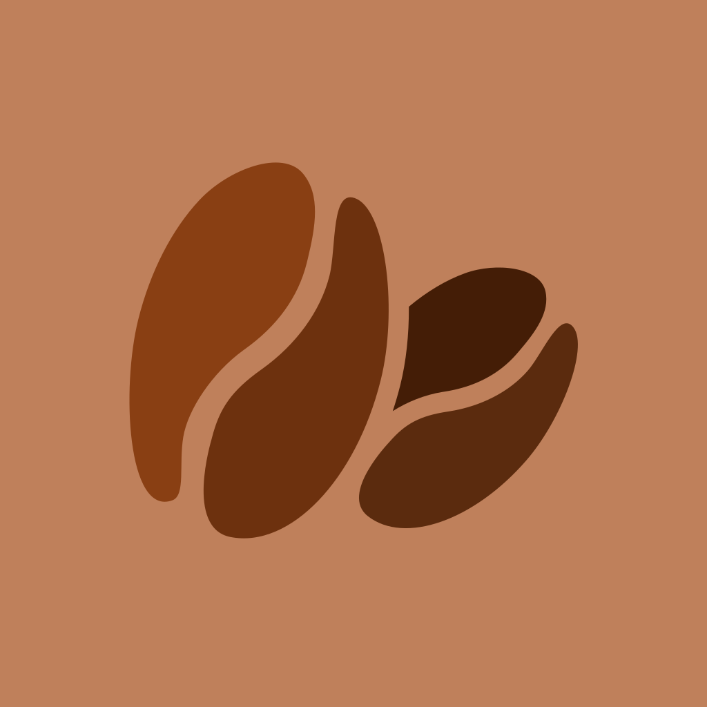

正在打开豆仓…
从右下角放入第一包咖啡豆吧。
回到豆仓，从任意卡片快速记录第一杯。
从右下角保存第一套冲煮参数。
PERSONAL BREW
你的咖啡日常和数据工具
DATA VAULT
备份文件只保存在你选择的位置
按天回看你的咖啡节奏
左右滑动查看全年
BEAN PROFILE
BREW PROFILE
BREW RECIPE
选择冲煮方式 → 填写方案信息 → 绑定咖啡豆 → 保存
COFFEE ENTRY
BREW LOG
SELECT
CALENDAR
PHOTO
选择拍摄新照片，或从系统图片选择器读取已有照片。
ARCHIVE PHOTO
OCR 已完成。要把这张图留在豆仓里，作为咖啡袋或标签图片吗？
BEAN PHOTO
点击“保存到手机”可通过系统面板保存或分享
SHARE CARD
选择是否把咖啡袋图片放入分享卡片
SHARE RECIPE
生成图片卡片，或直接复制离线分享码
IMPORT
扫码或粘贴分享码，导入为一份新方案，不会覆盖现有方案
确认效果后再分享或保存到设备
SMART SELECT
改名会同步更新所有记录；删除会清空使用该值的字段。
PREFERENCES
数据仅保存在这台设备。卸载应用前，请先导出备份。
CLOUD SYNC
默认关闭，登录后才会访问云端
未登录
隐私说明：不登录则完全离线、不联网、不上传任何数据。开启同步后，你的咖啡数据（含图片）经 HTTPS 传输并保存在云端，仅用于你自己的跨设备同步、仅你可见；可随时“删除云端账号”清除云端副本。
COFFEE CLOUD
登录后再决定是否开启同步。
新用户？创建账号
返回登录忘记密码？用恢复码重设
BREW ASSIST
ABOUT

版本 2.0.6
豆仓是一款为咖啡爱好者设计的本地优先记录工具。你可以保存每一包咖啡豆的产地、风味与价格，记录每次饮用和冲煮方案，让日常里喝过的咖啡慢慢有迹可循。
豆仓默认完全离线使用，数据保存在你的设备中。云同步为可选功能，仅在登录并开启后使用。
你可以随时退出账号或删除云端副本。
DATA FOUND
是否将旧版浏览器记录迁移到 SQLite？原数据不会被删除。
CONFIRM
此操作需要确认。
EXIT
再次按返回键或点击“退出”即可关闭应用。